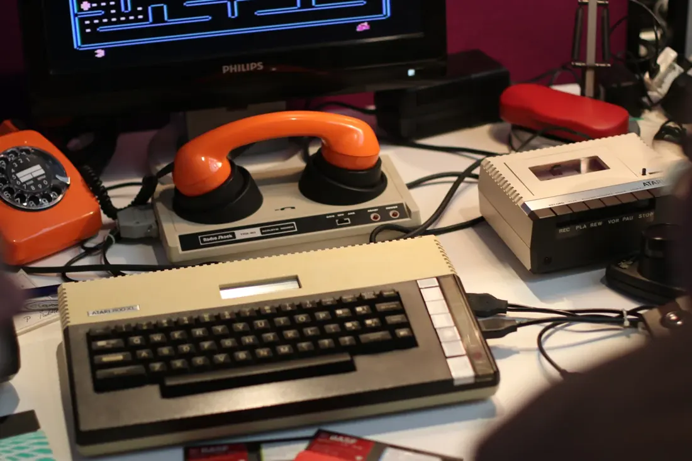
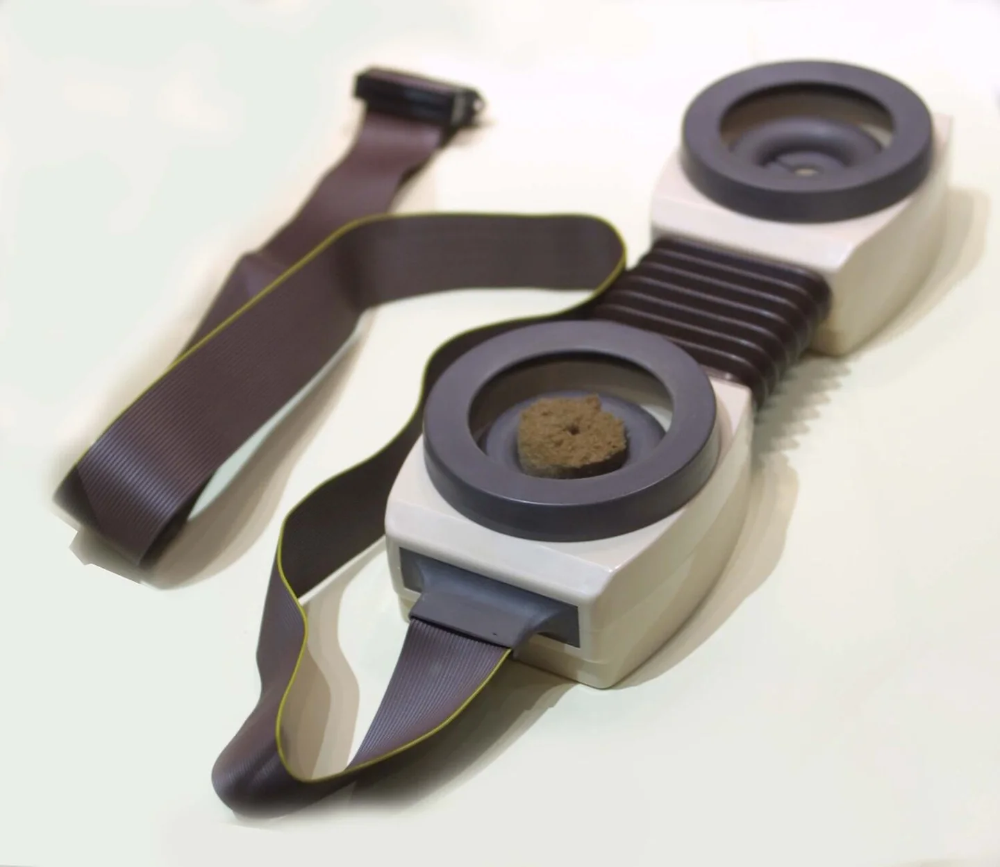

The dial-up
handshake.
Have you ever wondered what those two modems were saying to each other? Inside that burst of whistles and static was a conversation. Here’s how to listen in.

ATARI 800XL / ACOUSTIC COUPLERBefore the handshake.
Long before a home computer had anyone to call, Bell’s 101 and 103 data sets made machines audible to the telephone network. By 1962 the 103 could carry a conversation in both directions at once. The caller occupied one pair of pitches and the answering machine another. A receiver could listen in its partner’s band while its own transmitter kept talking.
An acoustic coupler made the handset itself the plug. You dialed, listened for the far end, then seated the receiver in its cups. A little loudspeaker played into the mouthpiece while a pickup listened at the earpiece. Livermore Data Systems sold both acoustic and direct-coupled models. Soon a hobbyist could build the part that spoke Bell’s language.
Sources for the prologue
Eight generations on the line.
Pick a speed you remember, or follow the signal from the first carrier to a 56K connection.